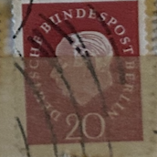
| SOURCE | TITLE| IMAGE MATCH | click to source page |
| eBay | Berlin #Mi184v MNH 1959 Prof Dr Theodor Heuss [9N167 YT164] | eBay | 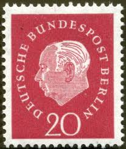 |
| Find Your Stamps Value | Value of deutsche bundespost berlindeutsche bundespost 20 red stamp - theodor heuss 1959 stamps | 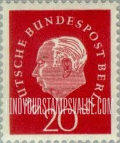 |
| ProBoards | Postmark Calendar | The Stamp Forum (TSF) | 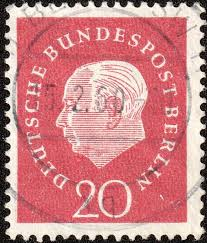 |
| Etsy | This item is unavailable - Etsy |  |
| Shutterstock | Germany Circa 1959 Postage Stamp Printed Stock Photo 339255281 | Shutterstock |  |
| Poppe Stamps | Poppe Stamps: German Federal Republic, 1959, 1221, Numbers - Values And Letters - Characters, Personalities, Numbers - Values And Letters - Characters, Personalities - stamps for sale by theme and country |  |
| eBay | Berlin #Mi184v MNH 1959 Prof Dr Theodor Heuss [Ribbed Gum Pair][9N167] | eBay |  |
| Amazon.com | Amazon.com: Berlin (West) 184wP Pareja horizontal sin montar Mint/Nunca con bisagras ** MNH 1959 Heuss (Sellos para coleccionistas) : Juguetes y Juegos | 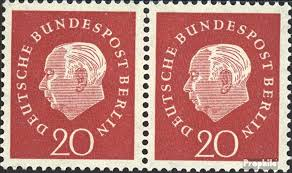 |
| Alamy | West Germany Postage Stamp - Prof. Dr. Theodor Heuss (1884-1963), 1st German President Stock Photo - Alamy | 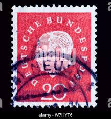 |
| eBay | 1959, Bundesrepublik Deutschland, 304 FL, gest. - 1614883 | eBay | 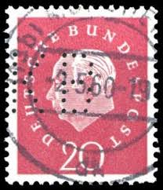 |
| Poppe Stamps | Poppe Stamps: West Berlin, 1971, B400, Propaganda, Workers - stamps for sale by theme and country | 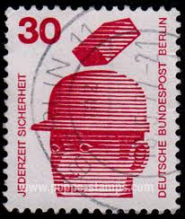 |
| Dreamstime.com | Prof Dr Theodor Heuss Stock Photos - Free & Royalty-Free Stock Photos from Dreamstime |  |
| Shutterstock | World First Stamp: Over 865 Royalty-Free Licensable Stock Photos | Shutterstock | 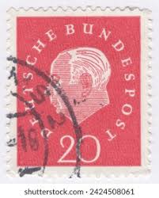 |
| Alamy | Postage stamp from the Federal Republic of Germany in the Federal President Theodor Heuss series issued in 1959 Stock Photo - Alamy |  |
| Poppe Stamps | Poppe Stamps: German Democratic Republic, 1961, E598, Composer, Birth, Coins, Musicians - stamps for sale by theme and country | 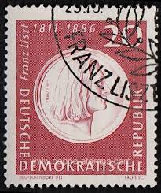 |
| eBay | Germany Stamp Theodor Heuss 20pf Used 795 Circular Cancel | eBay | 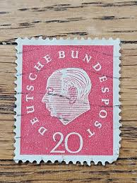 |
| Etsy | Germany Stamp Set Heuss 1954 to 1959 - Etsy Canada | 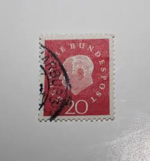 |
| Etsy | Buy Vintage 1960 Düsseldorf Postcard – Königsallee (king's Avenue), Germany Online in India - Etsy | 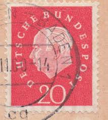 |
| Poppe Stamps | Poppe Stamps: German Federal Republic, 1959, 1221, Numbers - Values And Letters - Characters, Personalities, Numbers - Values And Letters - Characters, Personalities - stamps for sale by theme and country | 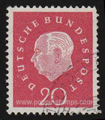 |
| eBay | West Germany - 1971 - Information About Accidents - 30Pfg - Used - #4 | eBay | 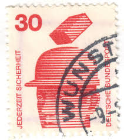 |
| Poppe Stamps | Poppe Stamps: German Federal Republic, 1971, 1596, Fire - stamps for sale by theme and country |  |
| PicClick CA | GERMAN CANCELLED POSTAGE Stamp / Timbre allemand Oblitere 20 pf Deutsches Reich $1.62 - PicClick CA | 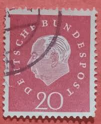 |
| Dreamstime.com | Isolated German Stamp editorial stock photo. Image of historic - 381448723 |  |
| Shutterstock | 3+ Hundred 1961 Music Royalty-Free Images, Stock Photos & Pictures | Shutterstock | 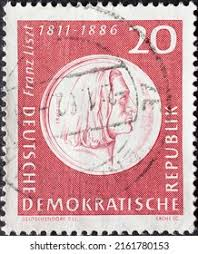 |
| eBay | Germany Berlin 1974 SCHOOL SEAL SHOWING ATHENA & HERMES SC 9N348 MNH | eBay | 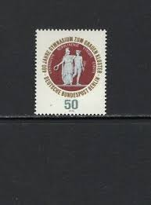 |
| Poppe Stamps | Poppe Stamps: German Federal Republic, 1959, 1221, Numbers - Values And Letters - Characters, Personalities, Numbers - Values And Letters - Characters, Personalities - stamps for sale by theme and country | 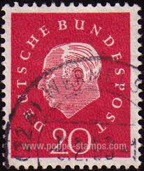 |
| Dreamstime | Cancelled Postage Stamp Printed Germany Danzig Shows Coat Arms Stock Photos - Free & Royalty-Free Stock Photos from Dreamstime |  |
| Poppe Stamps | Poppe Stamps: German Federal Republic, 1954, 1111, Presidents, Presidents - stamps for sale by theme and country |  |
| Shutterstock | Karnal Haryana India -august 30th2022-closeup Commemorative Stock Photo 2195795651 | Shutterstock | 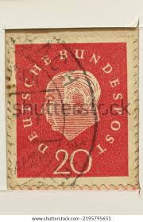 |
| lastdodo.com | Johann Sebastian Bach [1685-1750] Stamp catalogue - LastDodo | 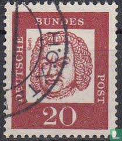 |
| Alamy | Theodor Heuss, the first president of West Germany from 1949 to 1959. Postage stamp issued in Federal Republic of Germany (West Germany) in 1954 Stock Photo - Alamy |  |
| iStock | German Postage Stamp Stock Photo - Download Image Now - Antique, Black Background, Black Color - iStock | 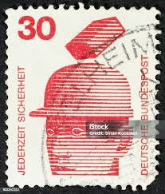 |
| Alamy | West Germany Postage Stamp - Prof. Dr. Theodor Heuss (1884-1963), 1st German President Stock Photo - Alamy | 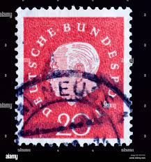 |
| Salma Alfelo (salmaalfelo) - Profile | Pinterest | 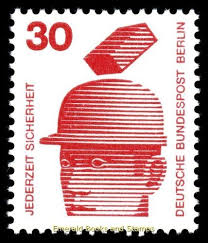 | |
| eBay | Germany RFA BRD Stamp 175, Celebrity, Canceled, VF Stamp | eBay | 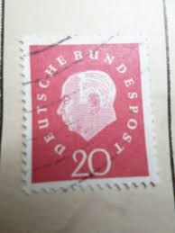 |
| eBay | DDR Nr. 269 gestempelt (DDR2) | eBay | 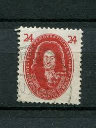 |
| eBay | Rare Deutsche Demokratische Republik German Postage Stamp Early Vintage 24 | eBay | 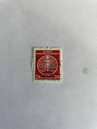 |
| Colnect | Stamp: Townseal of Aschaffenburg from the year 1332 (Germany, Federal RepublicMi:DE 255,Sn:DE 765,Yt:DE 134,Sg:DE 1181,AFA:DE 1222,Un:DE 134 📮 | 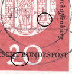 |
| Shutterstock | Karnal Haryana India -august 30th2022-closeup Commemorative Foto Stok 2195795651 | Shutterstock | 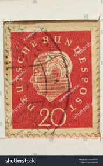 |
| 123RF | Made Germany Stamp Stock Photos and Images - 123RF | 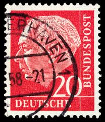 |
| Dreamstime.com | 639 German Professor Stock Photos - Free & Royalty-Free Stock Photos from Dreamstime | 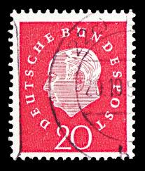 |
| eBay | German German & Colonies Red 1951-1960 Year of Issue Stamps | eBay |  |
| eBay | German Democratic Republic Stamp Scott #66, Used | eBay | 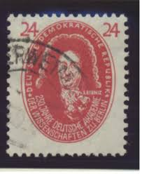 |
| eBay | Netzschkau-Reichenbach 1945 8Pf KorkCANC Zierer BPP | eBay | 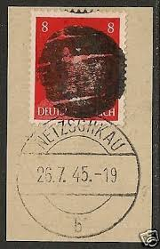 |
| Etsy | 1959 GERMANY Heuss Deutsche Bundespost Stamp 20pf Vintage Postage Stamp - Etsy | 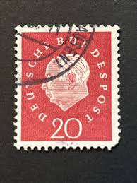 |
| Todocolección | logical papers : a selection / gottfried wilhel - Buy Used books about philosophy on todocoleccion | 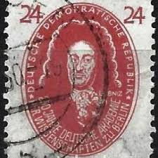 |
| eBay | GERMANY ~ Deuirches Reich ~ Stamp 20 Heller/Tax Stamp 2 ~ Posted ~ 1948 ~ P31 | eBay | 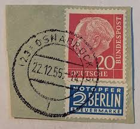 |
| eBay | 1. Germany 1964 Election of the Federal President in Berlin Heinrich Lubke FDC | eBay | 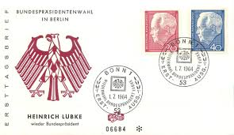 |
| Dreamstime.com | Politicians Serie Stock Photos - Free & Royalty-Free Stock Photos from Dreamstime | 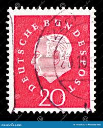 |
| eBay | German Cinderella Stamps for sale | eBay | 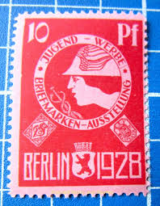 |
| Alamy | Postage stamp german germany post hi-res stock photography and images - Page 15 - Alamy |  |
| Colnect | Stamp: Gerhart Hauptmann (1862-1946) Poet and Playwright (Germany, Democratic Republic (DDR)(Personalities from Politics, Art and Science) Mi:DD 336vaXII,Sn:DD 131,Yt:DD 100,Sg:DD E91,Un:DD 336 📮 | 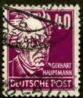 |
| The Philately | GDR 1969 Mi 1477 20 years DDR stamp exposition Sc 1115 for sale at The Philately | 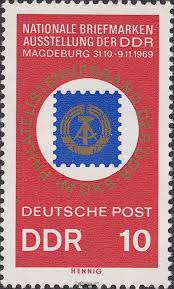 |
| JF-Stamps | 1948 - 1959 | JF Stamps Danmark | 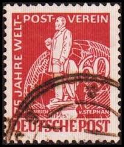 |
| Etsy | 70 Vintage Used Postage Stamps: Random Mix for Junk Journals & Scrapbooking - Etsy | 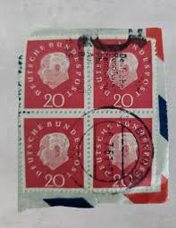 |
| eBay | GERMANY ~ Deuirches Reich ~ Stamp 20 Heller/Tax Stamp 2 ~ Posted ~ 1948 ~ P33 | eBay | 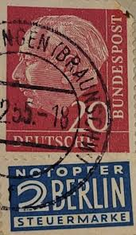 |
| Alamy | West german stamp hi-res stock photography and images - Page 2 - Alamy | 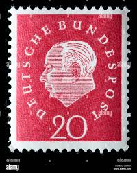 |
| eBay | GERMANY 660-BERLIN -Schlossfreiheit mit National Denkmal (1930) | eBay | 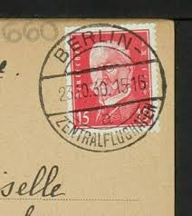 |
| pvoller.net | German Postal History and More | 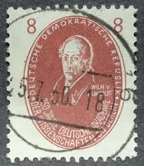 |